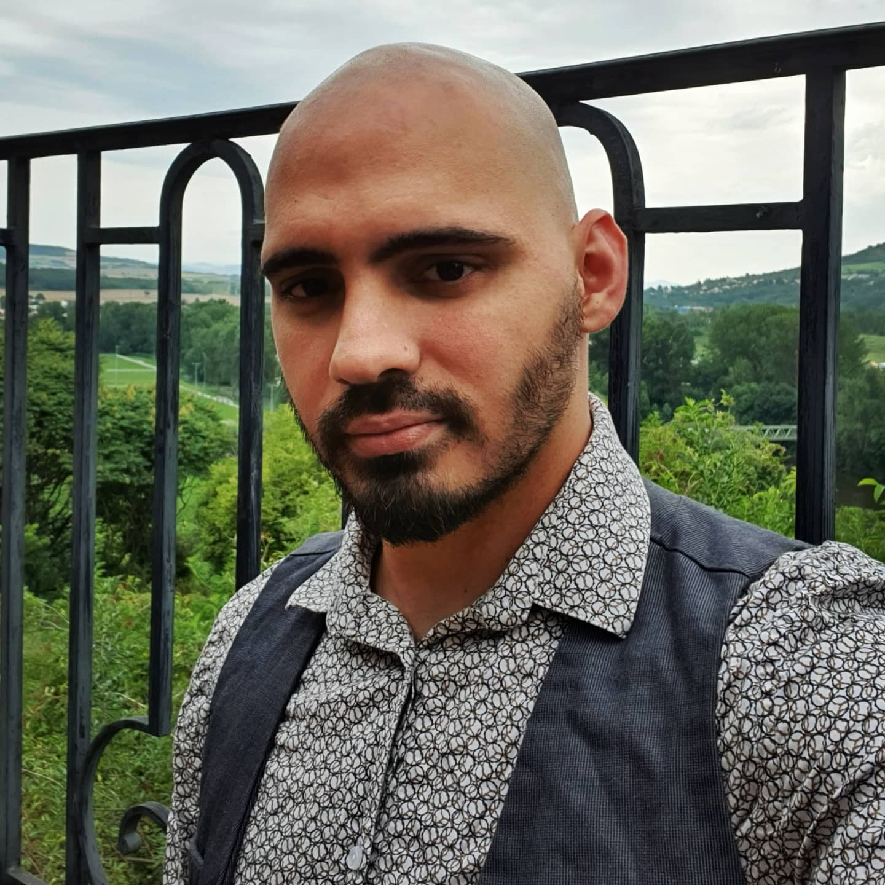
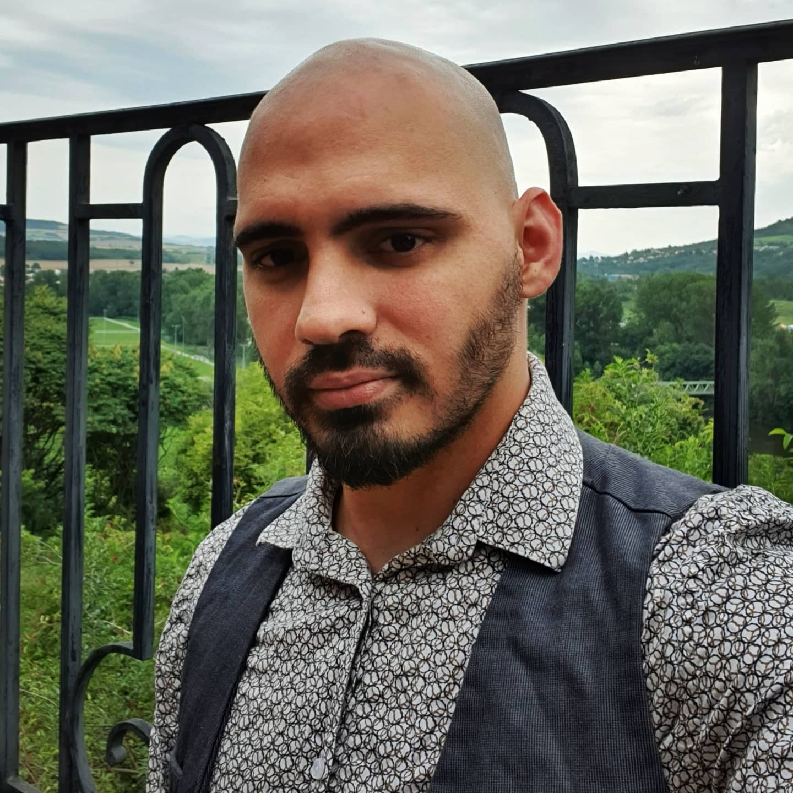

Salut
Je suis
{{usercv.firstName}} {{usercv.lastName}}
- Age : {{usercv.age}}
- Adresse : {{usercv.adresse}}
- E-mail : {{usercv.email}}
- Télèphone : {{usercv.number}}
- Permis : {{usercv.permis}}